Penta · Product Design Review · 2026-06-27
When you click Tommy Frank, you should land on a page that earns trust, shows the work, and makes hiring obvious. Here's how we got there — in three chapters.
Agenda
Tip: press O for an overview of every slide · 1·2·3 to jump between chapters.
Chapter 01
Frame the problem, ground it in the repo, and shape a decision-ready PRD — the what and the why before any pixels.
The problem
He appears three times on the gig — the seller block, the "Get to know Tommy Frank" card, and review rows — but none of it is a link. We drop one of the highest-intent moments in any marketplace:
No profile.html exists. The profile is the hub that ties identity → proof → every Tommy gig → trust together. Without it, the prototype dead-ends on its most important person.
Reuse-first · the DS is CONNECTED
Name, Verified Pro badge, Level 2 dots, ★4.9 (612), "12 in queue".
.gig-seller-block
France · Member Apr 2020 · Avg reply 1h · Last delivery ~3h · EN/FR.
.seller-meta-card
Four real paragraphs — 8+ yrs, film/game/editorial, 40+ countries.
.seller-bio
"Our Latest Creations" expanding gallery + filter chips.
.lc-section · .gfilter
"From $X" service cards for the discovery band.
.box service
Glow borders & inner-glow for the AI layer.
ai_glow family
The work is composition + a few new bands + the AI layer — not a rebuild.
Competitor teardown · what each does best
Identity → trust → Contact → gigs → reviews. The Pro badge as trust anchor.
Steal: the spine + our DNA
Quantified trust: Job Success %, earnings, hours, Top Rated Plus.
Steal: one headline metric
Cover image + project grid first. The work is the hero.
Steal: portfolio before bio
"Available to hire" + Services with explicit pricing & turnaround.
Steal: hire-me + from $X band
Minimal, portfolio-forward, one primary CTA.
Steal: restraint, single CTA
Hero + monthly listeners + "Popular" (the hits) → depth → "fans also like".
Steal: the whole IA
Identity → Proof → Depth → Validation → Continuation. The only variable is Proof-vs-Depth order. Tommy is visual → Proof-first.
The framing device · your analogy, decoded
Hero + one trust line → greatest-hits portfolio → about → all gigs → reviews → related — with an AI "is he right for me?" layer that does the buyer's homework.
Recommended IA · the "strip"
The trust model · quantify confidence
Like Upwork's JSS and Spotify's monthly listeners — a hesitant buyer believes a scannable number faster than a paragraph. We already have the data on Tommy:
Packaged as a reusable .trust-stats strip — proposed back to the design system.
Ideation · the AI layer
Buyer types their brief → tailored "why Tommy fits", recommended package, and an honest "best when / watch-out". Browsing → decision.
.ai-fit-summary
612 reviews → themes with evidence: "praised for speed, color, communication; complex briefs benefit from a kickoff call."
.ai-review-digest
24/7 pre-sales concierge on his FAQ/portfolio — answers, drafts a brief, hands the warm lead over. Softens the reply-time gap.
.ask-seller
In the prototype these are scripted/canned (no backend) and clearly labeled "AI summary · see sources." Rendered with the existing ai_glow family.
Builder posture · no silent invention
Header · categories · footer · seller block · Verified Pro badge · level dots · stars · meta grid · bio · gallery + chips · gig cards · buttons · ai_glow · motion tokens.
.profile-hero · .trust-stats · .review-breakdown · .profile-sticky-cta · .related-sellers · segmented-control--chip. All proposed back.
.ai-fit-summary · .ai-review-digest · .ask-seller — nothing existing synthesizes trust/fit for a buyer. Propose as the DS's AI layer.
New route profile.html at root → added to vite.config.js; linked from the gig's seller name/avatar. States: loading · empty · AI idle/thinking/error · online/offline. RTL-ready via logical properties.
How we'll know it worked
Handoff · PM → Design Research
Validate (or revise) this IA against real product UI before we design pixels:
Confirms proof-first + one-metric + sticky single CTA — and gives concrete layouts for the trust bar, AI fit card, and review digest. Or revises with evidence.
Chapter 02
Pull real competitor UI from Mobbin, analyze how the best products solve each band, and turn it into concrete concepts — the how others do it.
Method
Every screen below is a real, cited reference — Fiverr · Upwork · Behance · Turo · Skillshare · Indeed · Notion · Linear · ManyChat · Whatnot · ChatGPT · BlaBlaCar. No invented UI. Full pack: docs/research/seller-profile-page/references.md.
Comparison matrix · table-stakes vs. where we win
| Band | Fiverr | Upwork | Behance | Best move for Tommy |
|---|---|---|---|---|
| Hero | Sidebar card | Bar + rate | Cover banner | Behance cover + Fiverr identity |
| Headline trust | ★ + level | Job Success % | Appreciations | One number: ★4.9 · 612 · 40+ countries |
| Portfolio | Carousel | Catalog | Grid hero | Grid first (visual seller) |
| Reviews | Breakdown + sub-scores | Feedback list | — | Sub-scores + theme chips + AI digest |
| AI | — | — | — | Our differentiator (3 bets) |
| Primary CTA | Contact | Hire/Message | Hire card | Sticky single Contact |
Direct competitor · Fiverr
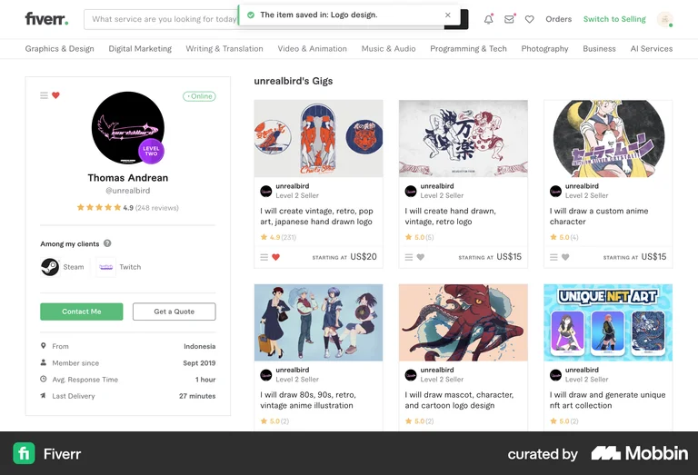
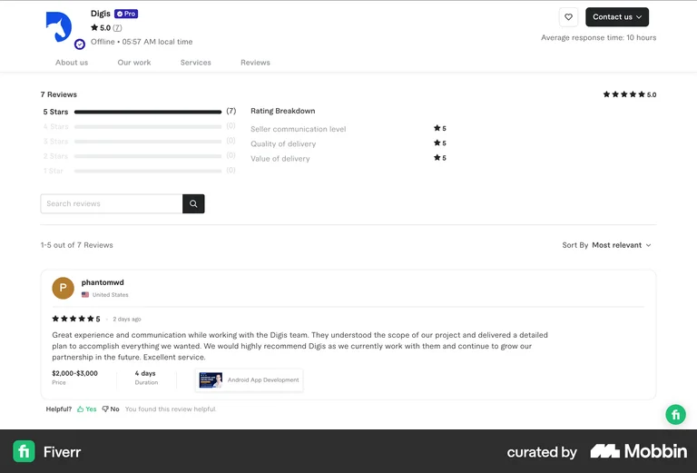
Direct competitor · Upwork
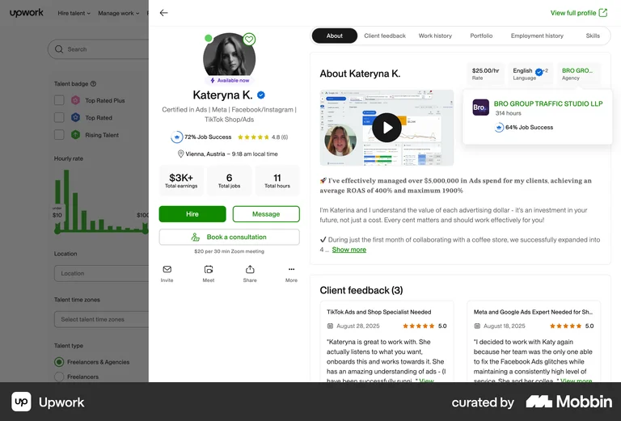
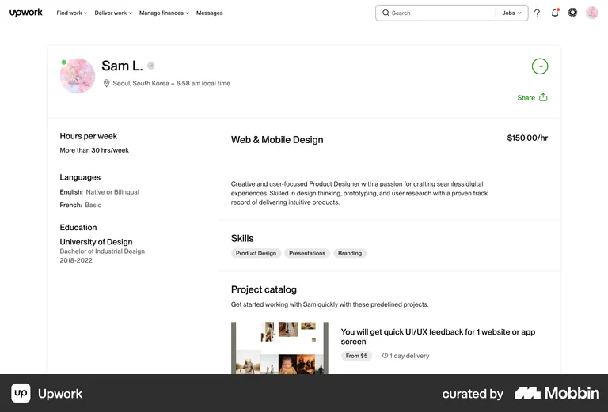
Aspirational · Behance
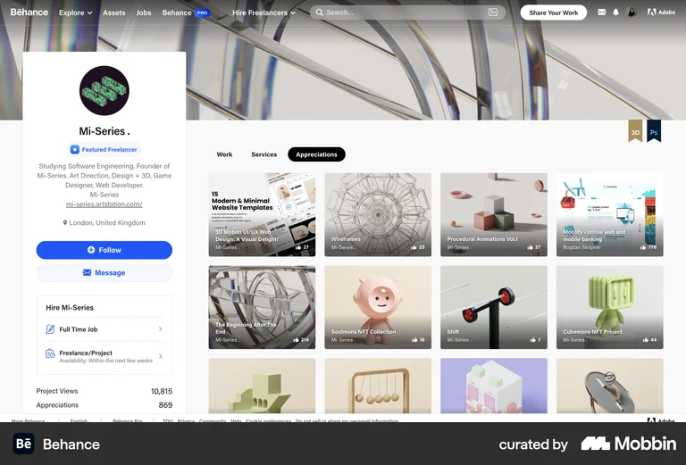
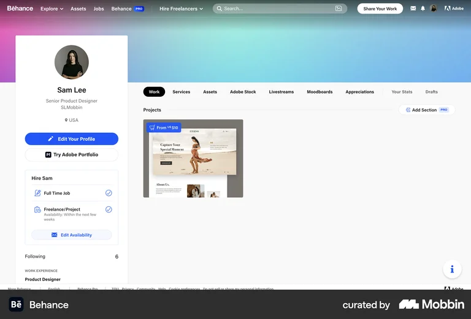
Pattern · reviews with breakdown
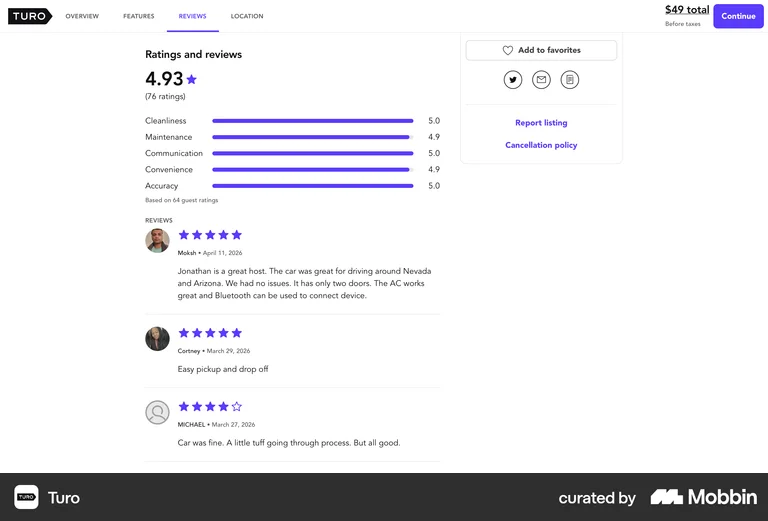
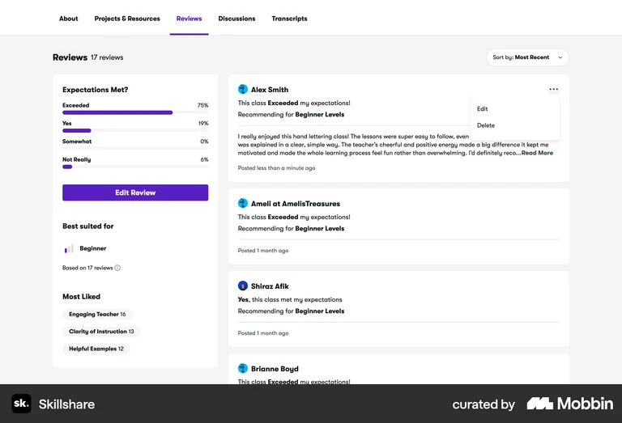
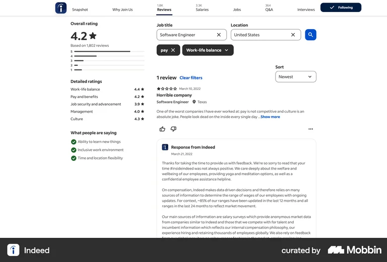
Pattern · the AI layer (our differentiator)
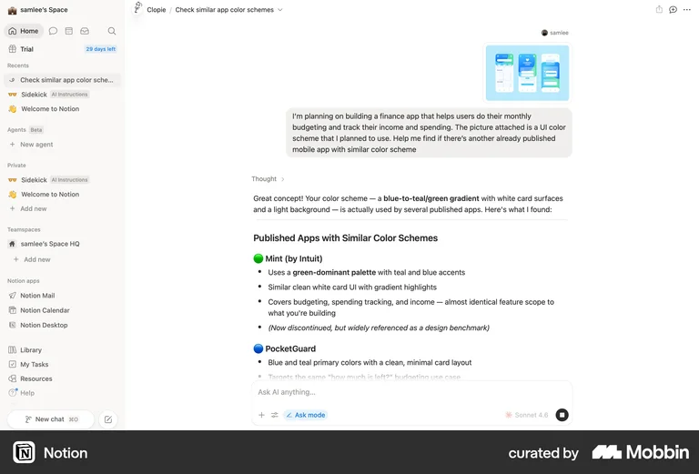
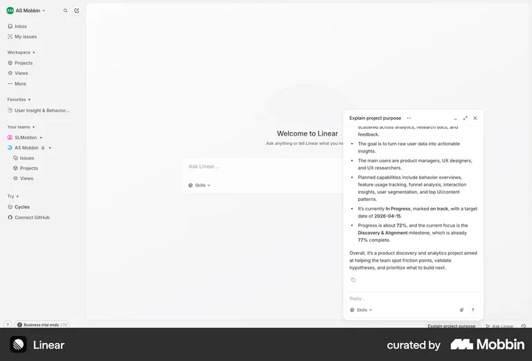
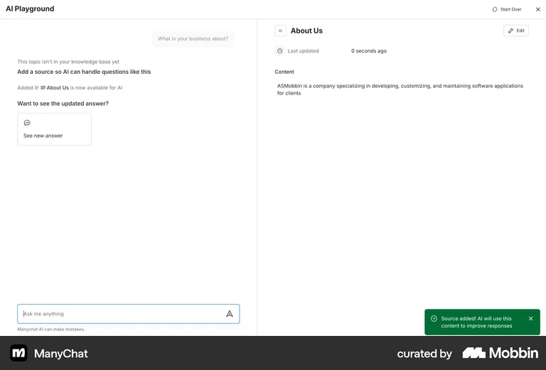
Lesson from Indeed's AI skills (Approve/Reject): label generated content + let the buyer verify sources.
Pattern · mobile (for the mobile mockup)
Opportunity map · ranked, with system-fit
What this means · concepts → build
Sidebar identity · gigs grid · gallery + chips · skills tags · review rows · buttons · ai_glow.
.profile-hero (+cover) · .trust-stats · .review-breakdown · .profile-sticky-cta · .related-sellers.
.ai-fit-summary · .ai-review-digest · .ask-seller — the AI layer.
Verdict: research confirms the PM hypothesis — proof-first, one headline metric, sticky single CTA. Next → senior-product-designer builds the screens. Drop the green every reference leans on — ours is ink-on-white.
Chapter 03
Ground in the product, decide every element with Use → Compose → Extend → Invent, then execute the whole thing — states, a11y, motion. The build.
The senior method · a conductor, grounded in the repo
Loaded DESIGN_CONTEXT.md + the Penta DS skills. Context read: monochrome web marketplace, WCAG AA, DS CONNECTED → reuse-first.
Every element passed Use → Compose → Extend → Invent. Invent only where nothing fit — the AI layer (you cleared "be bold").
ui-ux-pro-max (correctness/a11y) + taste pass — all states, the flow, motion, real copy. Not the happy path only.
Taste guidance was subordinated to the product: high-end-visual-design bans Helvetica & 1px borders — but those are Penta. Authority order: product → accessibility → taste.
Key design decisions · the why
Design System Impact · update & tell them
Macan + ink tokens · .button (+border) · seller name/badge/level dots · stars · meta grid · bio · gig cards · skills tags · header/footer/categories · Penta easing & durations.
.profile-hero (+cover) · .trust-stats · .review-breakdown + sub-scores · .profile-sticky-cta · .related-sellers · gallery filter chip. Proposed back.
.aifit (is-this-seller-right-for-me) · .ai-review-digest · AI thinking skeleton. New DS pattern: the AI surface (gradient hairline + ✦ + "see sources").
Nothing invented silently. The three AI components + five extensions are written up in docs/specs/seller-profile-page.md to adopt into Penta.
Senior rigor · not just the happy path
Default · AI idle → thinking (skeleton) → result → labeled source · review filter empty · portfolio empty · online/offline · hover/focus/active/disabled.
Ink 15:1 contrast · visible focus rings · aria-labels on icon buttons · aria-live on the AI result · keyboard lightbox (Esc) · sequential headings · tabular figures.
Scroll-reveal & count-up (enter ~600ms, --ease-penta) · grayscale→color hover · transform/opacity only · respects prefers-reduced-motion + a visibility safety net.
The build · live
Next → propose the AI surface + 5 extensions back into the Penta design system.
Wrap-up · what we shipped
Thank you. Questions? — press O to jump to any slide.